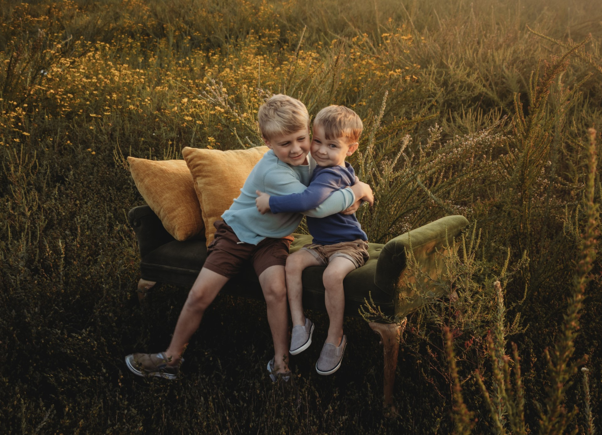
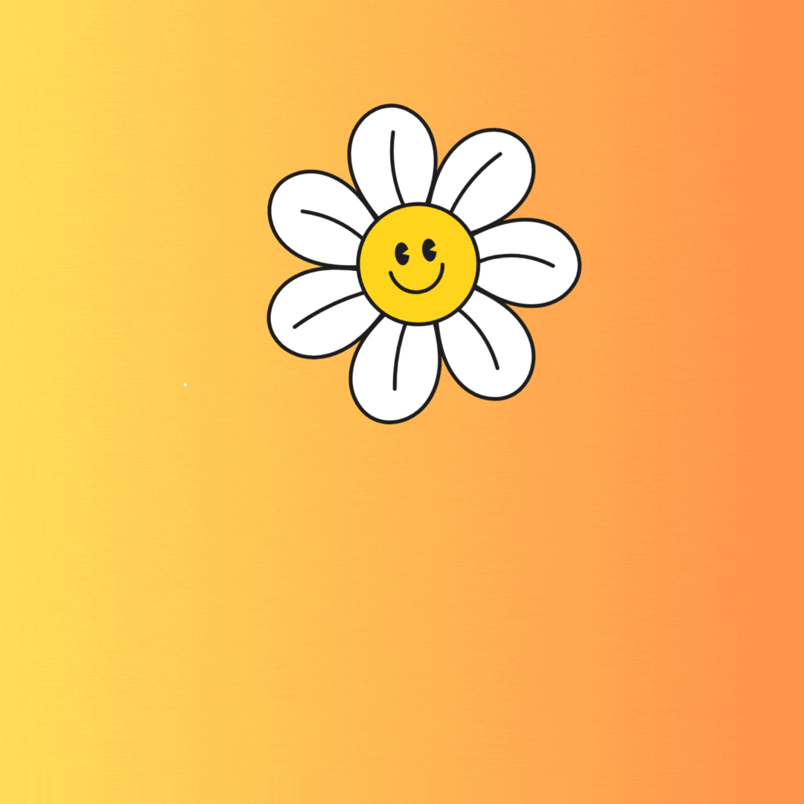

Jenna Compton
All About Me
My name is Jenna Compton.

I was born in Fairmont, West Virginia.
I moved to Louisa, Kentucky when I was in second grade.
I decided right away I wanted to become a teacher.
I graduated from Lawrence County High School in 2006 and decided to pursue my dreams of becoming a teacher.
There I studied Elementary and Special Education.
I finished my undergraduate degree in 2010 and started my first teaching job back home right after.
I met my husband in 2013 he was in the military and stationed in Fort Bliss, Texas.
We got married in 2016.
We have two boys: Finn and Theo.

Some of my Favorite Things
- Reading books
- Taking naps
- Crab legs
- Going to the beach
- Daisies
- Gardening
- Sleeping in
- Singing in the shower
- Netflix

My favorite books:
- "Number the Stars"
- "The Miraculous Journey of Edward Tulane"
- "Belle Prater's Boy"
Learn more about my professional career and accomplishments in the Professional section.